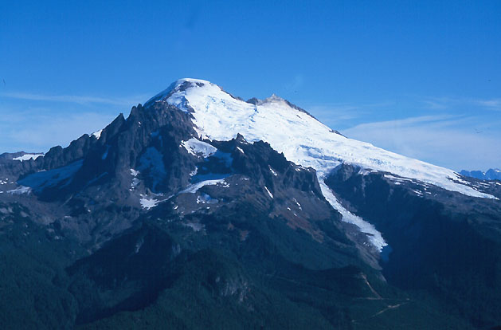

North Twin Sister, West Ridge
I had most of a day recently and had to take advantage of a spell of great weather so late in October. I thought about several options, but finally resolved to tick off the West Ridge of the North Twin Sister. This route is well-known for firm, grippy rock, and provides a wonderful scrambling experience “hard to equal in it’s grade.” I’d always canceled plans to go there because of the long logging roads that have to be hiked or biked for 3000 feet of elevation gain just to get there. I’ve really got to make my peace with these logging roads…but I can’t I just can’t!

I took a bike, pushing it most of the way. I was somewhat worried about this approach, having heard various horror stories about getting lost. I left the car at 7:15 am and went up the road, taking the 4th right as instructed. This comes at about 2.5 miles. The overgrown road had a tank trap at less than half a mile, then continued gently (I could actually ride this road) to cross a creek and enter a world of forest industry. I heard dump trucks and heavy machinery behind the trees. My instructions were to turn left on an abandoned road with a dead tree across it. Well, I saw a road with a dead tree beside it, and thought that was good enough. 20 minutes later, having crawled up and down 2 dozen tank traps, and abandoned the bike in some bushes, I realized that this road was taking me away from the mountain. I went back down, where a friendly worker told me that all the roads were destroyed like that. He said there were other roads I could try taking, but didn’t know exactly which one would reach the west ridge. Luckily enough, right before having to somehow ride around an earth moving machine busily moving earth, I found the road with the tree across it. Also a little cairn. “Only climbers make cairns,” I reasoned.
This road was pretty steep, and after several switchbacks I made it to the end (ignoring any turn offs, I believe there were two). A tent was here, but no people. The west ridge was in perfect view. It took 2.5 hours to get here, including my wrong turn.
An obvious trail goes up the ridge, into pleasant timber, and out to scrub trees and boulders with a great view of the rest of the route. Trying to ignore the sounds of industry behind me, I started up. First I dutifully followed the cairns that marked little dirt paths between rocky steps. But eventually I learned that this would severely limit the enjoyable scrambling! “‘nuff of that,” I remarked to a pale green sphere hovering nearby. The rough solid rock provided many handholds, and I sought to maximize the angle with traverses and walls. On or just below the crest was best. I met another party midway up, they had the tent down at the start of the trail. It wasn’t worthwhile to read the route description, as even the steepest sections of rock had cracks to allow progress. My favorite was a few lieback moves to an exposed step-across, to a mantle supported by a finger crack, then a hand crack! It was all lichen-encrusted so I dubbed it a first ascent. “The Green Orb” Grade 0.0032, 5.7. Behind me, the floating enigma chuckled.
The ridge leveled out before the summit, and I climbed a few sub-summits before getting to the real thing. Mt. Baker was so “in my face,” so “extreme.” Especially the Black Buttes. I mentally drew lines snaking up their buttresses and wondered what it would be like on them. A few minutes of relaxation, and I was eager to get down. I especially looked forward to the bike ride!
Foolishly, I decided to go down the north face. I chose the lowest angle section, and descended left of a steep neve field. The rock was terrible, and every move dislodged a battery of charges. Finally I could scree-ski for short distances. I reached the top of a cliff and found a way down traversing to the right. More scree below this led me to a snowfield and a trickling stream with heavenly water. I had done the whole trip on one quart of Gatorade, mistakenly assuming I would find somewhere to refill it. But the only streams up till now had oily muck from the nearby road and industrial machinery. So this was good.
I climbed down another cliff, then began a long traverse back to the West ridge, sometimes on slippery heather. Once I slipped into a huckleberry patch. Rather than get up, I immediately fell to eating the ripe berries that seemed to drop from the limbs. The green orb and I sought out the best patches, oblivious to observers friend or foe. Resuming the descent, I quickly found the trail and hiked down to the trailhead camp. It was 1:45 pm. As you can guess, the bike ride was fast, and would have been faster if I were a better biker. I reached the car at 2:30, and drove back to various obligations. Later, near the town of Acme, I saw a great view of the Sisters Range that had been hidden in the morning. A small green speck seemed to hover near the ascent ridge.
In later years I was often asked about my vision that October day on the West Ridge. Despite publication of a book of verse on the subject (now out of print), I never really came to grips with the phenomenon, though I always felt the presence to be a friendly one (witness the huckleberry incident, which I still recall warmly).